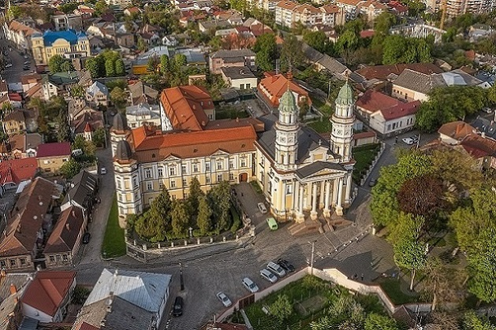
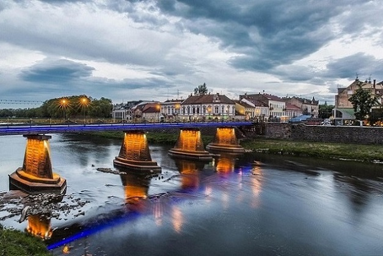
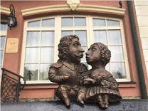
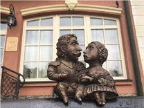
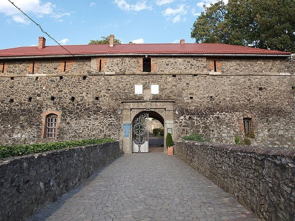
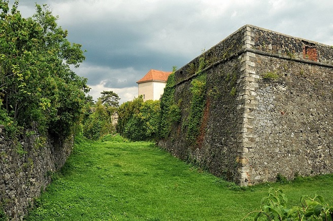

УЖГОРОД – МІСТО З ІНТЕРНАЦІОНАЛЬНИМ ШАРМОМ
 
Ужгород – місто мультикультур, ароматної кави, старовинної архітектури та дивовижних милих міні-пам’ятничків.
.jpg) 
 
.jpg)
Це місто натхнення, любові, радості, щирості, відчуттів і толерантності. Місто, яке закохує – саме так кажуть про давній тисячолітній Унгвар і туристи, і самі його жителі. Таких, як Ужгород, не існує. Його унікальність в інтернаціональності, його єдність – в особливих ідеях, поглядах і прагненнях людей, його багатогранність – в різноманітті стилів, конфесій, смаків, ароматів, його шарм – в кожній старовинній вуличці. Ужгород – місто, відкрите для кожного: в цьому його головна родзинка. Можна годинами розповідати про Ужгород, але найкраще, без сумніву, самому побачити всі його дивовижні туристичні принади в прогулянках – пішохідною, вечірньою або авто-експрес. Мова йде не тільки про архітектуру або дегустації місцевої кухні – важливо відчути місто зсередини, побачити всі його деталі, дізнатися цікаві факти, неймовірні історії і знахідки, які знають тільки професійні гіди-екскурсоводи – адже вони подарували Ужгороду своє серце.
Історія
На території Ужгорода виявлено залишки поселень, найдавніші з яких налічують понад сто тисяч років. Упродовж давніх віків через територію сучасного міста пройшло чимало племен і народів: гуни, авари, бургунди даки, кельти, сармати. Одними з перших відомих засновників ужгородського поселення були білі хорвати, які у другій половині 1-го тисячоліття заселили територію сучасного Ужгорода. Поселення називалося Онґвар (або Унґвар, чи Гунґвар, чи Унґювар).
Біографія» Ужгорода захоплює і надихає, особливо в екскурсії древнім містом, у якого зберігся свій особливий шарм і неперевершена історія.
Протягом століть історично склалися три центри міста:
- Горяни
- Замкова гора
- Радванка
Ужгородський замок
Серцем Ужгорода є його замок. Історія власне середньовічного замку налічує понад тисячу років. Упродовж століть замок неодноразово перебудовувався згідно з вимогами фортифікації середньовіччя. До наших днів від найдревніших споруд його збереглась лише частина фундаменту, сліди якого можна бачити в підземеллях, а також фрагменти карнизів з романським орнаментом.
 .jpg)
Населення
Населення Ужгорода росло нерівномірно. До початку 90-х років XX сторіччя кількість мешканців міста досягла максимального рівня — 120 тисяч мешканців і в подальші роки стабілізувалося на цьому рівні.
Основні етнічні групи.
-
українці
- 77.8 %
- росіяни
- 9.6 %
- угорці
- 6.9 %
- словаки
- 2.2 %